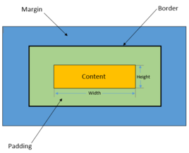

HTML
超文本标记语言（英语：HyperText Markup Language，简称：HTML）是一种用于创建网页的标准标记语言。 您可以使用 HTML 来建立自己的 WEB 站点，HTML 运行在浏览器上，由浏览器来解析。HTML 指的是超文本标记语言: HyperText Markup Language HTML 不是一种编程语言，而是一种标记语言 标记语言是一套标记标签 (markup tag) HTML 使用标记标签来描述网页 HTML 文档包含了HTML 标签及文本内容 HTML文档也叫做 web 页面
实例
<!DOCTYPE html> <html> <head> <meta charset="utf-8"> <title>菜鸟教程(runoob.com)</title> </head> <body> <h1>我的第一个标题</h1> <p>我的第一个段落。</p> </body> </html>
HTML文档的后缀名
- .html
- .htm
以上两种后缀名没有区别，都可以使用。
HTML标签
| 标签 | 描述 |
|---|---|
| <!--...--> | 定义注释。 |
| <!DOCTYPE> | 定义文档类型。 |
| <a> | 定义锚。 |
| <abbr> | 定义缩写。 |
| <acronym> | 定义只取首字母的缩写。 |
| <address> | 定义文档作者或拥有者的联系信息。 |
| <applet> | 不赞成使用。定义嵌入的 applet。 |
| <area> | 定义图像映射内部的区域。 |
| <article> | 定义文章。 |
| <aside> | 定义页面内容之外的内容。 |
| <audio> | 定义声音内容。 |
| <b> | 定义粗体字。 |
| <base> | 定义页面中所有链接的默认地址或默认目标。 |
| <basefont> | 不赞成使用。定义页面中文本的默认字体、颜色或尺寸。 |
| <bdi> | 定义文本的文本方向，使其脱离其周围文本的方向设置。 |
| <bdo> | 定义文字方向。 |
| <big> | 定义大号文本。 |
| <blockquote> | 定义长的引用。 |
| <body> | 定义文档的主体。 |
| <br> | 定义简单的折行。 |
| <button> | 定义按钮 (push button)。 |
| <canvas> | 定义图形。 |
| <caption> | 定义表格标题。 |
| <center> | 不赞成使用。定义居中文本。 |
| <cite> | 定义引用(citation)。 |
| <code> | 定义计算机代码文本。 |
| <col> | 定义表格中一个或多个列的属性值。 |
| <colgroup> | 定义表格中供格式化的列组。 |
| <command> | 定义命令按钮。 |
| <datalist> | 定义下拉列表。 |
| <dd> | 定义定义列表中项目的描述。 |
| <del> | 定义被删除文本。 |
| <details> | 定义元素的细节。 |
| <dir> | 不赞成使用。定义目录列表。 |
| <div> | 定义文档中的节。 |
| <dfn> | 定义定义项目。 |
| <dialog> | 定义对话框或窗口。 |
| <dl> | 定义定义列表。 |
| <dt> | 定义定义列表中的项目。 |
| <em> | 定义强调文本。 |
| <embed> | 定义外部交互内容或插件。 |
| <fieldset> | 定义围绕表单中元素的边框。 |
| <figcaption> | 定义 figure 元素的标题。 |
| <figure> | 定义媒介内容的分组，以及它们的标题。 |
| <font> | 不赞成使用。定义文字的字体、尺寸和颜色。 |
| <footer> | 定义 section 或 page 的页脚。 |
| <form> | 定义供用户输入的 HTML 表单。 |
| <frame> | 定义框架集的窗口或框架。 |
| <frameset> | 定义框架集。 |
| <h1> to <h6> | 定义 HTML 标题。 |
| <head> | 定义关于文档的信息。 |
| <header> | 定义 section 或 page 的页眉。 |
| <hr> | 定义水平线。 |
| <html> | 定义 HTML 文档。 |
| <i> | 定义斜体字。 |
| <iframe> | 定义内联框架。 |
| <img> | 定义图像。 |
| <input> | 定义输入控件。 |
| <ins> | 定义被插入文本。 |
| <isindex> | 不赞成使用。定义与文档相关的可搜索索引。 |
| <kbd> | 定义键盘文本。 |
| <keygen> | 定义生成密钥。 |
| <label> | 定义 input 元素的标注。 |
| <legend> | 定义 fieldset 元素的标题。 |
| <li> | 定义列表的项目。 |
| <link> | 定义文档与外部资源的关系。 |
| <map> | 定义图像映射。 |
| <mark> | 定义有记号的文本。 |
| <menu> | 定义菜单列表。 |
| <meta> | 定义关于 HTML 文档的元信息。 |
| <meter> | 定义预定义范围内的度量。 |
| <nav> | 定义导航链接。 |
| <noframes> | 定义针对不支持框架的用户的替代内容。 |
| <noscript> | 定义针对不支持客户端脚本的用户的替代内容。 |
| <object> | 定义内嵌对象。 |
| <ol> | 定义有序列表。 |
| <optgroup> | 定义选择列表中相关选项的组合。 |
| <option> | 定义选择列表中的选项。 |
| <output> | 定义输出的一些类型。 |
| <p> | 定义段落。 |
| <param> | 定义对象的参数。 |
| <pre> | 定义预格式文本。 |
| <progress> | 定义任何类型的任务的进度。 |
| <q> | 定义短的引用。 |
| <rp> | 定义若浏览器不支持 ruby 元素显示的内容。 |
| <rt> | 定义 ruby 注释的解释。 |
| <ruby> | 定义 ruby 注释。 |
| <s> | 定义加删除线的文本。 |
| <samp> | 定义计算机代码样本。 |
| <script> | 定义客户端脚本。 |
| <section> | 定义 section。 |
| <select> | 定义选择列表（下拉列表）。 |
| <small> | 定义小号文本。 |
| <source> | 定义媒介源。 |
| <span> | 定义文档中的节。 |
| <strike> | 不赞成使用。定义加删除线文本。 |
| <strong> | 定义强调文本。 |
| <style> | 定义文档的样式信息。 |
| <sub> | 定义下标文本。 |
| <summary> | 为 <details> 元素定义可见的标题。 |
| <sup> | 定义上标文本。 |
| <table> | 定义表格。 |
| <tbody> | 定义表格中的主体内容。 |
| <td> | 定义表格中的单元。 |
| <textarea> | 定义多行的文本输入控件。 |
| <tfoot> | 定义表格中的表注内容（脚注）。 |
| <th> | 定义表格中的表头单元格。 |
| <thead> | 定义表格中的表头内容。 |
| <time> | 定义日期/时间。 |
| <title> | 定义文档的标题。 |
| <tr> | 定义表格中的行。 |
| <track> | 定义用在媒体播放器中的文本轨道。 |
| <tt> | 定义打字机文本。 |
| <u> | 定义下划线文本。 |
| <ul> | 定义无序列表。 |
| <var> | 定义文本的变量部分。 |
| <video> | 定义视频。 |
| <wbr> | 定义视频。 |
| <xmp> | 定义预格式文本。 |
HTML属性
| 属性 | 值 | 描述 |
|---|---|---|
| class | classname | 规定元素的类名（classname） |
| id | id | 规定元素的唯一 id |
| style | style_definition | 规定元素的行内样式（inline style） |
| title | text | 规定元素的额外信息（可在工具提示中显示） |
HTML 全局属性
= HTML5 中添加的属性。
| 属性 | 描述 |
|---|---|
| accesskey | 规定激活元素的快捷键。 |
| class | 规定元素的一个或多个类名（引用样式表中的类）。 |
| contenteditable | 规定元素内容是否可编辑。 |
| data-* | 用于存储页面或应用程序的私有定制数据。 |
| dir | 规定元素中内容的文本方向。 |
| draggable | 规定元素是否可拖动。 |
| hidden | 规定元素仍未或不再相关。 |
| id | 规定元素的唯一 id。 |
| lang | 规定元素内容的语言。 |
| spellcheck | 规定是否对元素进行拼写和语法检查。 |
| style | 规定元素的行内 CSS 样式。 |
| tabindex | 规定元素的 tab 键次序。 |
| title | 规定有关元素的额外信息。 |
HTML新特性
1.HTML5 新元素
HTML5提供了新的元素来创建更好的页面结构：
|
标签 |
描述 |
|
定义页面独立的内容区域。 |
|
|
定义页面的侧边栏内容。 |
|
|
允许您设置一段文本，使其脱离其父元素的文本方向设置。 |
|
|
定义命令按钮，比如单选按钮、复选框或按钮 |
|
|
用于描述文档或文档某个部分的细节 |
|
|
定义对话框，比如提示框 |
|
|
标签包含 details 元素的标题 |
|
|
规定独立的流内容（图像、图表、照片、代码等等）。 |
|
|
定义 <figure> 元素的标题 |
|
|
定义 section 或 document 的页脚。 |
|
|
定义了文档的头部区域 |
|
|
定义带有记号的文本。 |
|
|
定义度量衡。仅用于已知最大和最小值的度量。 |
|
|
定义导航链接的部分。 |
|
|
定义任何类型的任务的进度。 |
|
|
定义 ruby 注释（中文注音或字符）。 |
|
|
定义字符（中文注音或字符）的解释或发音。 |
|
|
在 ruby 注释中使用，定义不支持 ruby 元素的浏览器所显示的内容。 |
|
|
定义文档中的节（section、区段）。 |
|
|
定义日期或时间。 |
|
|
规定在文本中的何处适合添加换行符。 |
2.HTML5 Canvas
HTML5
CSS概述
- CSS 指层叠样式表 (Cascading Style Sheets)
- 样式定义如何显示 HTML 元素
- 样式通常存储在样式表中
- 把样式添加到 HTML 4.0 中，是为了解决内容与表现分离的问题
- 外部样式表可以极大提高工作效率
- 外部样式表通常存储在 CSS 文件中
- 多个样式定义可层叠为一
样式表定义如何显示 HTML 元素，就像 HTML 3.2 的字体标签和颜色属性所起的作用那样。样式通常保存在外部的 .css 文件中。通过仅仅编辑一个简单的 CSS 文档，外部样式表使你有能力同时改变站点中所有页面的布局和外观。 为了解决这个问题，万维网联盟（W3C），这个非营利的标准化联盟，肩负起了 HTML 标准化的使命，并在 HTML 4.0 之外创造出样式（Style）。 当代浏览器都支持 CSS .
CSS语法
CSS 实例
CSS 规则由两个主要的部分构成：选择器，以及一条或多条声明:

选择器通常是需要改变样式的 HTML 元素。每条声明由一个属性和一个值组成。属性（property）是希望设置的样式属性（style attribute）。每个属性有一个值。属性和值被冒号分开。
为了让CSS可读性更强，你可以每行只描述一个属性:
如:
CSS语法
<style> p { color:red; text-align:center; } </style> <p>我是段落</p>
CSS选择器
在 CSS 中，选择器是一种模式，用于选择需要添加样式的元素。"CSS" 列指示该属性是在哪个 CSS 版本中定义的。（CSS1、CSS2 还是 CSS3。）
| 选择器 | 例子 | 例子描述 | CSS |
|---|---|---|---|
| .class | .intro | 选择 class="intro" 的所有元素。 | 1 |
| #id | #firstname | 选择 id="firstname" 的所有元素。 | 1 |
| * | * | 选择所有元素。 | 2 |
| element | p | 选择所有 <p> 元素。 | 1 |
| element,element | div,p | 选择所有 <div> 元素和所有 <p> 元素。 | 1 |
| element element | div p | 选择 <div> 元素内部的所有 <p> 元素。 | 1 |
| element>element | div>p | 选择父元素为 <div> 元素的所有 <p> 元素。 | 2 |
| element+element | div+p | 选择紧接在 <div> 元素之后的所有 <p> 元素。 | 2 |
| [attribute] | [target] | 选择带有 target 属性所有元素。 | 2 |
| [attribute=value] | [target=_blank] | 选择 target="_blank" 的所有元素。 | 2 |
| [attribute~=value] | [title~=flower] | 选择 title 属性包含单词 "flower" 的所有元素。 | 2 |
| [attribute|=value] | [lang|=en] | 选择 lang 属性值以 "en" 开头的所有元素。 | 2 |
| :link | a:link | 选择所有未被访问的链接。 | 1 |
| :visited | a:visited | 选择所有已被访问的链接。 | 1 |
| :active | a:active | 选择活动链接。 | 1 |
| :hover | a:hover | 选择鼠标指针位于其上的链接。 | 1 |
| :focus | input:focus | 选择获得焦点的 input 元素。 | 2 |
| :first-letter | p:first-letter | 选择每个 <p> 元素的首字母。 | 1 |
| :first-line | p:first-line | 选择每个 <p> 元素的首行。 | 1 |
| :first-child | p:first-child | 选择属于父元素的第一个子元素的每个 <p> 元素。 | 2 |
| :before | p:before | 在每个 <p> 元素的内容之前插入内容。 | 2 |
| :after | p:after | 在每个 <p> 元素的内容之后插入内容。 | 2 |
| :lang(language) | p:lang(it) | 选择带有以 "it" 开头的 lang 属性值的每个 <p> 元素。 | 2 |
| element1~element2 | p~ul | 选择前面有 <p> 元素的每个 <ul> 元素。 | 3 |
| [attribute^=value] | a[src^="https"] | 选择其 src 属性值以 "https" 开头的每个 <a> 元素。 | 3 |
| [attribute$=value] | a[src$=".pdf"] | 选择其 src 属性以 ".pdf" 结尾的所有 <a> 元素。 | 3 |
| [attribute*=value] | a[src*="abc"] | 选择其 src 属性中包含 "abc" 子串的每个 <a> 元素。 | 3 |
| :first-of-type | p:first-of-type | 选择属于其父元素的首个 <p> 元素的每个 <p> 元素。 | 3 |
| :last-of-type | p:last-of-type | 选择属于其父元素的最后 <p> 元素的每个 <p> 元素。 | 3 |
| :only-of-type | p:only-of-type | 选择属于其父元素唯一的 <p> 元素的每个 <p> 元素。 | 3 |
| :only-child | p:only-child | 选择属于其父元素的唯一子元素的每个 <p> 元素。 | 3 |
| :nth-child(n) | p:nth-child(2) | 选择属于其父元素的第二个子元素的每个 <p> 元素。 | 3 |
| :nth-last-child(n) | p:nth-last-child(2) | 同上，从最后一个子元素开始计数。 | 3 |
| :nth-of-type(n) | p:nth-of-type(2) | 选择属于其父元素第二个 <p> 元素的每个 <p> 元素。 | 3 |
| :nth-last-of-type(n) | p:nth-last-of-type(2) | 同上，但是从最后一个子元素开始计数。 | 3 |
| :last-child | p:last-child | 选择属于其父元素最后一个子元素每个 <p> 元素。 | 3 |
| :root | :root | 选择文档的根元素。 | 3 |
| :empty | p:empty | 选择没有子元素的每个 <p> 元素（包括文本节点）。 | 3 |
| :target | #news:target | 选择当前活动的 #news 元素。 | 3 |
| :enabled | input:enabled | 选择每个启用的 <input> 元素。 | 3 |
| :disabled | input:disabled | 选择每个禁用的 <input> 元素 | 3 |
| :checked | input:checked | 选择每个被选中的 <input> 元素。 | 3 |
| :not(selector) | :not(p) | 选择非 <p> 元素的每个元素。 | 3 |
| ::selection | ::selection | 选择被用户选取的元素部分。 | 3 |
盒子模型
在网页中，一个元素占有空间的大小由几个部分构成，其中包括元素的内容（content），元素的内边距（padding），元素的边框（border），元素的外边距（margin）四个部分。这四个部分占有的空间中，有的部分可以显示相应的内容，而有的部分只用来分隔相邻的区域或区域。4个部分一起构成了css中元素的盒模型。

元素分类
HTML中标签元素三种不同类型：块状元素（block），行内元素（inline），行内块状元素（inline-block）。
- 行内元素：a、b、span、img、input、strong、select、em、button、textarea, abbr , acronym , bdo , big , br , cite , code , dfn , font , i , img , input , kbd , label , q , s , samp , small , strike , sub , sup
- 块级元素：div、ul、li、dl、dt、dd、p、h1-h6、blockquote],address , blockquote , center , dir , div , dl , fieldset , form , hr , isindex , menu , noframes , noscript , ol , p , pre , table , ul , li
- 可变元素(根据上下文关系确定该元素是块元素还是内联元素)：applet ,button ,del ,iframe , ins ,map ,object , script
- 行内块状元素：只有在CSS中通过display:inline-block对一个对象指定inline-block属性，可以将对象呈递为内联对象。
- 空元素：即系没有内容的HTML元素，例如：br、meta、hr、link、input、img
JS
JavaScript 是世界上最流行的编程语言。
这门语言可用于 HTML 和 web，更可广泛用于服务器、PC、笔记本电脑、平板电脑和智能手机等设备。
JavaScript 是脚本语言
- JavaScript 是一种轻量级的编程语言。
- JavaScript 插入 HTML 页面后，可由所有的现代浏览器执行。
- JavaScript 是可插入 HTML 页面的编程代码。
Js中的数据类型
Js中的数据类型一共有六种，即number，string，boolean，underfine，null，object。
一、number
Number数据类型指的是数字，可以为整型，也可以是浮点数。
如:
number
var a=12,b=12.5;
二、string
字符串由零个或多个字符构成，字符包括字母，数字，标点符号和空格;需要注意的是字符串必须放在引号里（单引号或双引号）;
如:
string
<script> var bob="man"; alert("bob"); //第一个弹窗为bob alert(bob); //第二个弹窗为man </script>
浏览器首先会弹出包含有“bob”的字符串，然后弹出包含有“man”的字符串，前者是直接弹出字符串，后者则是弹出变量的值。
三、boolean
布尔型数据只能有两种值 true 和 false，在js中true和false是关键字。通常，我们设置布尔值时多用于条件的判断。
如:
boolean
<script> var flag=true; if(flag){ alert("flag is "+flag)//若flag为true，弹窗 } </script>
在条件判断语句中我们将所有的判断条件看做一个布尔值（这里需要了解一些布尔值的转换特性）如果布尔值为true，执行大括号内代码；如果为false，不执行大括号内代码。
四、undefined
undefined通常指的是没有赋值的变量，通过typeof可以对数据的类型进行判断。
如:
undefined
<script> var a,b=undefined; alert(a); //弹出undefined alert(typeof a); //弹出undefined </script>
两次结果都为undefined。
五、null
null是一个只有一个值的特殊类型。表示一个空对象引用。
如:
null
var a=null; //将a清空
将a清空
六、object
对象就是由一些彼此相关的属性和方法集合在一起而构成的一个数据实体。常见的对象有array，window，document等。
如:
object
<script> var today = new Date(); var year = today.getFullYear(); var month = today.getMonth() + 1; var day = today.getDay(); var date = today.getDate(); var weekly=["星期天","星期一","星期二","星期三","星期四","星期五","星期六"] document.write("this year is "+year+"年 "+"this month is "+month+"月 "+"the date is "+date+"日 "+"today is "+weekly[day]+"<br>"); </script>
通过创建对象实例就可以调用对象的方法了，如上就是创建了一个Date的对象实例today，today通过调用Date的方法得出了现在的年月日等信息。
数组array是作为经常使用的对象，是由多个 (键-值) 所组成的一个多容器。其索引 默认是从0开始的。创建数组有两种方法：1创建数组对象实例 var arr=new Array（1,2,3）；2直接使用面向字面量 var a=[1,2,3];
JS数据类型转换
数据类型查看
在js中我们经常需要知道某些变量的数据类型，并将其转换为我们所需要的数据类型。通常，我们判断变量的数据类型会用到标识符typeof,
如：
object
<script> var mood = "happy"; alert(typeof mood); //弹出string alert(typeof 95); ////弹出number </script>
通过标识符，我们可以很快获取数据的类型;
数据的转换中，我们经常用到的是将变量转换成字符串或数字。 转换成字符串要使用mix.toString()、String(mix)，
如：
object
<script> var married = false; alert(married.toString()); //弹出false alert(String(married)); //弹出false </script>
转换成数字时，有两种方法，parseInt() 转换成整数，parseFloat()转换成浮点数。
如：
object
<script> var test1 = parseInt("blue"); //returns NaN var test2 = parseInt("1234blue"); //returns 1234 var test3 = parseInt("22.5"); //returns 22 var test4 = parseFloat("1234blue"); //returns 1234 var test5 = parseFloat("22.5"); //returns 22.5 alert("test1="+test1+",test2="+test2+",test3="+test3+",test4="+test4+",test5="+test5) </script>
前端框架
比较常用的框架有Bootstrap、AUI、Amaze UI、Frozen UI、WeUi、SUI、MUI、Semantic UI、Foundation、UiKit、Pure.
以下将逐一对他们进行分析和样式实现
Bootstrap
Bootstrap应用例子
表单

字体大全
h1是一个标题small是一个副标题
pre是带边框的文本，成父级100%的blockem也是斜体 mark是标记> small是一个副标题
class="lead"是一个突出的文本
text-uppercase全部大写
text-lowercase全部大写
text-capitalize开头大写
code代表代码，粉底
kbd是深灰色底的文本
pre是带边框的文本，成父级100%的blockem也是斜体 mark是标记 b是粗体 strong也是粗体 i也是斜体 中国 cite表引用，斜体
blockquote是文章导读，引用，用于文章导读左边有一条 small左边有横杠
small，反向右边有横杠address为地址 河南科技大学
表格
| 姓名 | Michael | 年龄 | 22 |
| 学历 | 本科 | 专业 | 电子信息 |
| 手机 | 15712696957 | 920595664 |